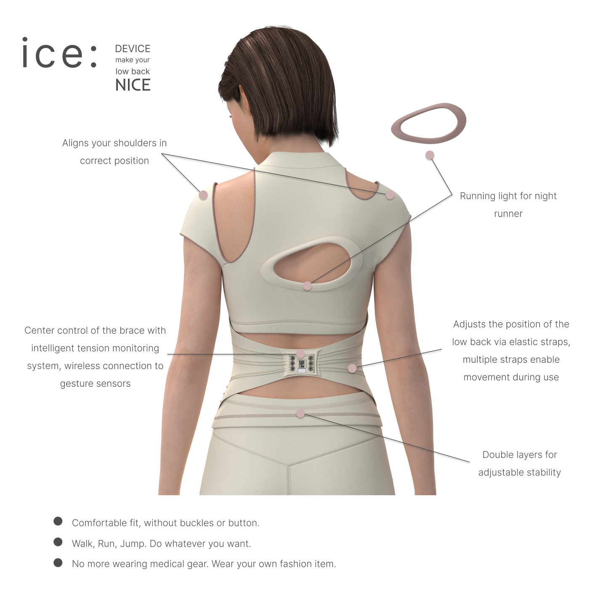

ICE · Fashion Low Back Brace (iF 2023)
ICE is a fashionable back brace for people with low back disorder problems. It can show immediate results and allow you to create long-term healthy habits. Improving your posture has positive effects on your well-being, self-esteem, and the impression you make on others. This product can control the tension of the brace anywhere at any time with two fingers. With controllable carbon wire, it can help you to adjust your posture properly, and keep your body in the correct movement. When you exercise, you can walk, run, jump, or do whatever you want with ICE. You can also check the tension with colors on the back. Take off your medical gear, ICE will be your fashion item for your low back.
